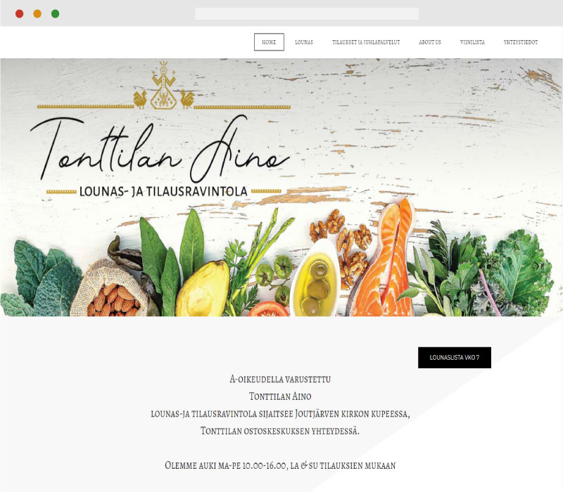
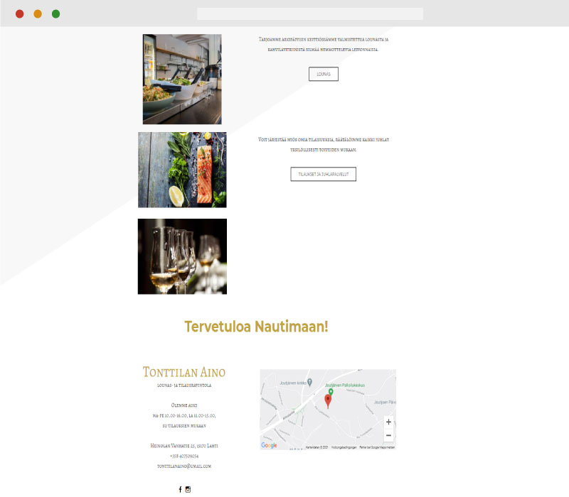
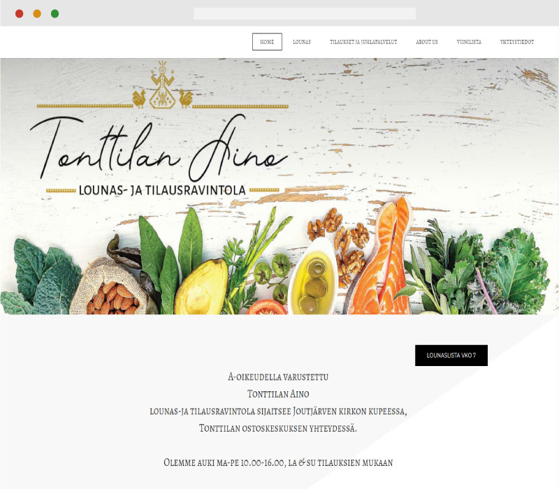
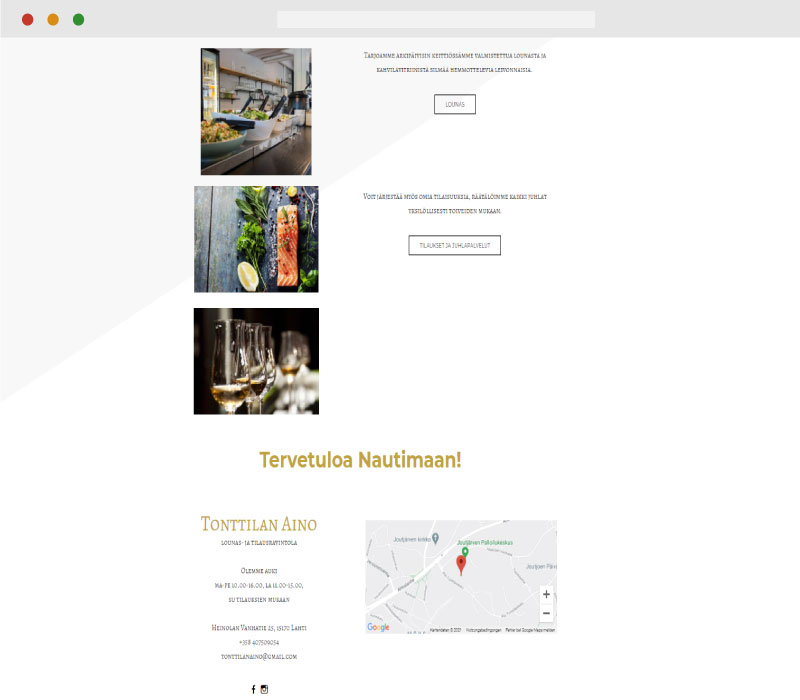
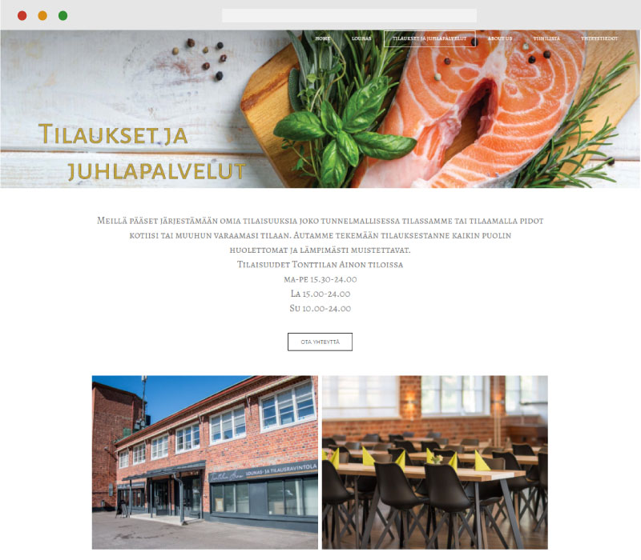
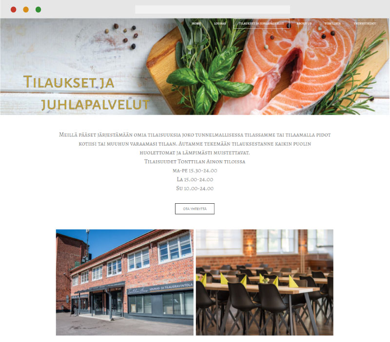

I combined in the logo design a modern style with a figure
girl Aino of the finnish national epic Kalevala.
For this project I was chosen to use Weebly, because the website need to be easily changeable by the owner.
Gallery
 



 
